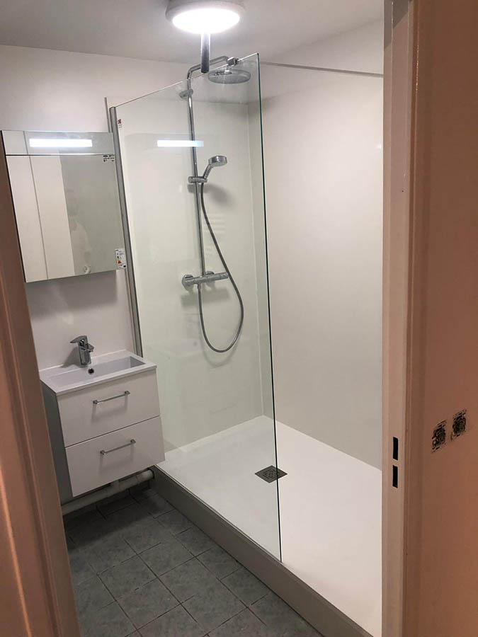

Paris et première couronne (92, 93, 94)
Avis de nos clients
Nos clients ont publié ces avis sur Google après nos travaux. Nous les reproduisons mot pour mot.

Recherche de fuite et infiltrations
Notre recherche de fuite
Avis Google
Je m’appelle Joseph, je gère une société de bâtiment. Régulièrement j’ai des problématiques insolubles de fuite et de recherche de fuite dans des bâtiments. La société ATC BAT m’a permis la dernière fois de trouver une fuite d’une canalisation intégrée entre deux étages dans le sol à un endroit tellement improbable que personne n’avait trouvé jusqu’à présent.
Donc ce n’est pas la première fuite qu’ils nous trouvent, ils font vraiment très bien le job, ce ne sont pas les moins chers. Par contre quand vous avez un problème à résoudre ils vous trouvent la solution.
Avis Google
Etant propriétaire, je fais régulièrement des travaux avec la société ATC BAT depuis deux ans, ils sont intervenus pour des infiltrations dans la toiture, fuite d'eau, rénovation, conseils DPE... C'est une société très performante au service des professionnels et des propriétaires avec des conseils très avisés. Je suis totalement satisfaite.
Travaux en copropriété
Nos travaux en copropriété
Avis Google
ATC BAT a réalisé la rénovation du portillon de notre copropriété. Le travail est bien fait et sérieux. En amont, le responsable nous a proposé et expliqué différents scénarios pour nous permettre de faire notre choix. Il y a eu un petit problème de finition au niveau de la peinture mais l équipe s est montrée très disponible pour y remédier. Nous recommandons ATC BAT.
Dépannage d’urgence
Notre service de dépannage
Avis Google
Sur les conseils d'un intervenant de la Compagnie des Deboucheurs, je me suis adressée à ATCbat […]. Ils ont de suite pris en charge le gros problème d'évacuation (canalisation percée) dont mon pavillon ancien était victime. Et nonobstant la période défavorable (les Fêtes, avec fournisseurs fermés, tuyaux à d'anciennes normes, etc), cette société a d'abord procédé au dépannage d'urgence qui s'imposait, puis, très rapidement, réalisé très proprement, les travaux de réparation. Le tout avec professionnalisme, amabilité, célérité. Donc, un grand MERCI !!!
Rénovation et salle de bain
Nos rénovations en photos, avant et après
Avis Google
Très bonne expérience avec ATC BAT que je recommande.
Dès le devis, les explications étaient claires et honnêtes.
J'ai fait réaliser des travaux de plomberie et de carrelage dans ma salle de bain, et le résultat est à la hauteur : finitions impeccables et chantier laissé propre chaque soir. Ils avaient même protégé tous les passages, de l'entrée jusqu'à la pièce en travaux.
C'est rare de trouver des artisans aussi professionnels, réactifs et ayant le souci du détail.Merci à toute l'équipe d'ATC BAT pour leur sérieux ! Je repasserai par eux sans hésiter.
Avis Google
J’ai fait appel à la société ATC BAT pour une rénovation totale et je suis tout à fait satisfait. Ils m’ont proposé de réaliser un DPE projeté afin de savoir exactement les travaux que je devais effectuer pour avoir un bon DPE. Ainsi, je n’ai pas eu de mauvaises surprises une fois les travaux réalisés. Le patron est d’excellent conseil, très disponible et réactif. Je recommande vivement cette société.
Avis Google
J’ai fait plusieurs fois appel à cette société pour de la rénovation ou des réparations et j’ai toujours été très satisfaite. Du devis aux travaux tout a été réalisé rapidement avec une très bonne communication.
Comment nous affichons les avis
Les avis de cette page viennent de Google. Nous les recopions sans changer un mot, avec le prénom et l’initiale de leur auteur, ou son pseudonyme.
Aucune contrepartie n’a été proposée en échange de ces avis.
Un avis reste affiché tant qu’il est publié sur Google. S’il est retiré de Google, nous le retirons de cette page à la mise à jour suivante.
Dernière mise à jour de la page : .
Formulaire de contact
Décrivez la fuite ou les travaux et indiquez le lieu d’intervention. Vous pouvez aussi nous écrire directement par mail.
Pour une réponse rapide : appelez le 06 74 79 07 77 ou écrivez sur WhatsApp
Vos données personnelles
Vos informations servent seulement à répondre à votre demande. Nous les gardons trois ans au plus.
Vos données et vos droitsWhatsApp ou mail
Une réponse rapide sur WhatsApp
Envoyez-nous les informations sur la fuite ou les travaux, avec vos photos. Nous préparons la suite avec vous.
06 74 79 07 77